3D 图库 · 12 张
用 Blender 渲染的那批图
全部由 3d/ 下的脚本生成：正交相机、三点光、透明背景，配色与站点一致。点任意一张跳到对应章节；想看能转的版本，去「交互模型」。
12 张静态图
11 个 glTF 模型
可重渲
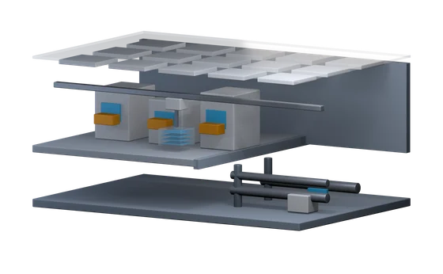
CH 01 · 晶圆厂厂房剖面
半透明天花板下的送风口、天车与 FOUP、地板下的管线，三层关系一次看清。
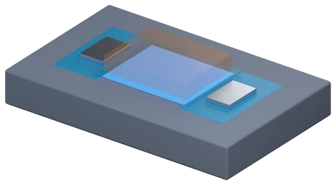
CH 02 · 晶体管MOSFET 透视
栅极半透明，露出它底下那条薄薄的沟道——栅极正是隔着氧化层控制它。
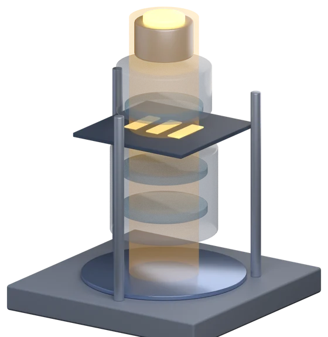
CH 04 · 光刻光刻机光路
光源、照明镜组、掩模版、投影物镜、晶圆，一根竖直的光路柱。
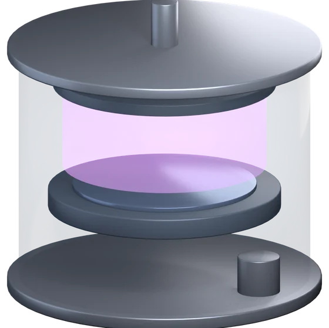
CH 06 · 刻蚀等离子刻蚀腔
透明腔壁里，气体从顶部喷下、等离子体在中间发光、晶圆躺在下电极上。
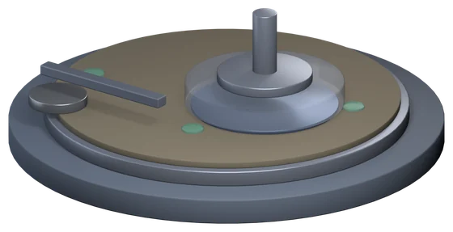
CH 08 · CMPCMP 抛光台
承片头半透明，看见晶圆正面朝下压在旋转的抛光垫上；旁边是修整器。
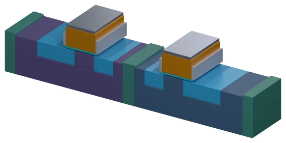
CH 11 · 工艺整合FEOL 七步构建
源漏嵌在阱里、栅极压在沟道上、STI 插在器件之间。交互版里能看它一层层长出来。
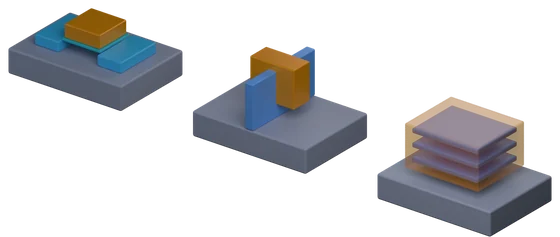
CH 12 · 先进结构平面 / FinFET / GAA
栅极包住 1 面、3 面、4 面的差别，摆在同一个视角下比。
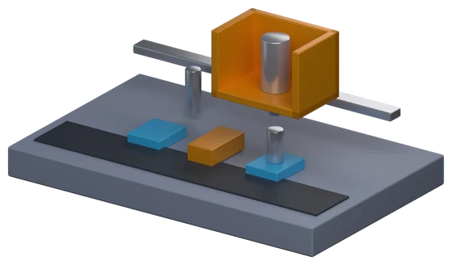
CH 13 · 存储器DRAM 1T1C
电容剖开一半，露出杯里的内电极；下面是埋入式字线与晶体管。
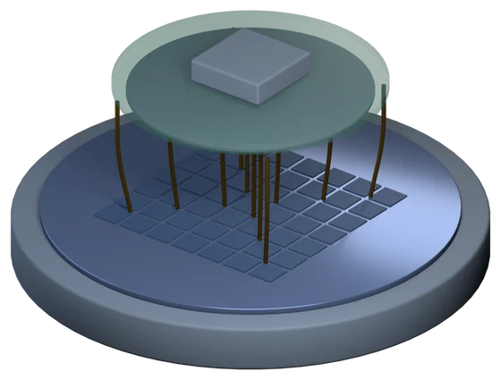
CH 19 · 晶圆测试CP 探针测试
探针卡半透明，几十根针压在晶圆的裸片阵列上。
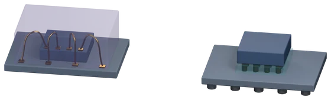
CH 20 · 封装打线 vs 覆晶
金线从边缘打弧出去，对比凸块铺满整个底面。
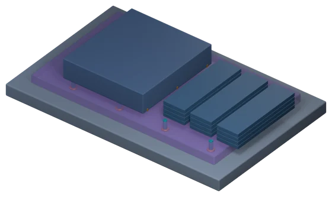
CH 21 · 先进封装2.5D 封装
半透明中介层里的 TSV、逻辑 die 与三组 HBM 堆叠。
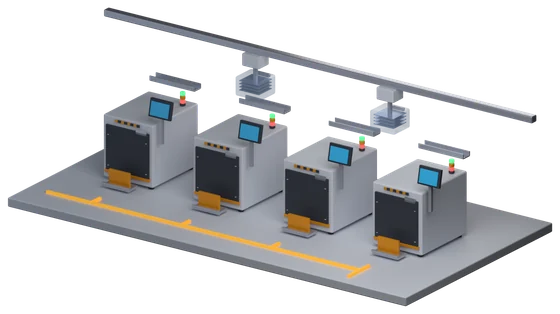
CH 23 · 工厂系统工厂流转路径
地面那条发光的折线是系统算出来的路线，不是画上去的装饰。
怎么重新生成
每张图一个脚本，共用 3d/kit.py。Blender 要用 app 里的二进制，homebrew 那个软链接在本机是坏的。
/Applications/Blender.app/Contents/MacOS/Blender -b --factory-startup \
--python 3d/fig_transistors.py -- assets/3d/transistors.png assets/3d/transistors.glb一个必须记住的坑：Blender 默认走 AgX 色调映射，颜色会偏。必须在脚本里设 view_settings.view_transform = "Standard"，否则渲出来的颜色和调色板对不上。